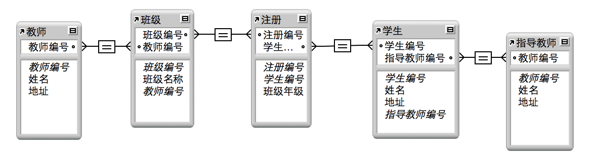
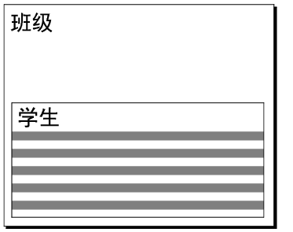

您可以将来自相关表的字段直接放到布局中，也可以放到显示相关记录的入口中：
•直接放到布局中：将相关字段直接放置在布局上可显示来自第一个相关记录的数据，即使在有多个相关记录与关系条件匹配时也是如此。（关系是否指定排序顺序决定了显示的第一条相关记录。）
•在入口中：将相关字段放到布局中的入口内，以显示匹配关系条件的所有相关记录中的数据。
例如，在"发票"数据库的"发票"布局中，您可能会执行以下操作：
•将显示"客户"数据库数据的相关字段放到发票中，这些数据如客户的 ID 号码和联系信息。（匹配字段为"客户 ID"。）在"客户"数据库中，每个客户 ID 只有一条记录，因此发票上的每个相关字段都显示该客户的数据。
•将显示最近的"订单历史"数据库"订单日期"字段值的相关字段放到发票中。（此外，匹配字段为"客户 ID"。）如果客户下达了多个订单，"订单历史"中就会出现多个与此客户的"客户 ID"匹配的记录。定义关系时，如果在"订单日期"字段中指定一个排序顺序，最新的日期将在相关字段直接放到布局（而非入口）上时显示在该字段中。
•将显示有关每个订购商品的数据的相关字段放到发票中，例如产品 ID、产品名称、单价等。（匹配字段是"订单 ID"。）由于绝大多数情况下发票上都会有多种产品（要显示不止一条相关记录），您需要创建一个入口来保存这些相关字段。入口中的每行将显示一条相关记录，包括您从"商品"数据库中选择的相关字段。
在显示相关记录的入口中放入相关字段时，FileMaker Pro Advanced 会使用两个起始点中的一个来解析要显示的相关数据：入口表中的记录，或者是布局表中的记录。起始点非常重要，因为它会影响字段显示的相关数据。
FileMaker Pro Advanced 基于关系图中以下这两个表之间的关系路径来决定使用哪个起始点：
•布局表
•字段表（包含放入的字段的表）
如果从布局表到字段表的关系路径包括入口表，则入口表中的记录就是起始点。否则，布局表中的记录为起始点。
例如，以下关系图显示学校入学注册的数据库。该数据库包含为教师、班级和学生创建的表，以及指示哪些学生在哪个班级的入学注册表。还包括一个顾问表（教师表的另一个摹本），该表为每个学生指派一个指导教授。

考虑下面的布局，它显示了班级中的注册学生。布局表是"班级"，入口表是"学生"。

下表描述了 FileMaker Pro Advanced 如何为从不同的表中放入此入口中的四个字段确定起始点。
放入的字段 | 从布局表到字段表的路径 | 路径包括入口表吗？ | 正在启动起始点 | 注释 |
名称字段来自学生表 | 班级-入学注册-学生 | 是 | 入口记录 | 放入的字段来自于入口表（一个非常常见的摹本）。该字段将在每个入口行中显示一个入学的学生。 |
名称字段来自"顾问"表 | 班级-入学注册-学生-顾问 | 是 | 入口记录 | 放入的字段将在每个入口行中显示一个学生顾问。 |
"教师"表中的姓名 | 班级-教师 | 否 | 布局记录 | 放入的字段将在每个入口行中重复该班级的教师，而不是对每个学生都使用第一个相关教师值。 |
"班级"表中的班级名称 | 班级 | 否 | 布局记录 | 放入的字段来自于布局表（一个不常见的摹本）。该字段将在每个入口行中重复班级的名称，如果布局在入口外的其他位置也包括"班级名称"字段，则该字段为多余数据。 |
除了放入入口中的字段外，FileMaker Pro Advanced 还使用此方法决定入口字段的其他参考的起始点：
•值列表：当值列表定义为只包括某个字段的相关值，并且入口中某个字段的格式设置为显示此值列表。（起始点决定显示在值列表中的值。）
•计算：在入口为激活状态的情况下脚本化的计算参考字段时。
通常，FileMaker Pro Advanced 决定要显示的正确相关数据。然而，通过修改关系图以包括其他表和关系，然后更改入口中参考的相关字段，可以更改起始点。